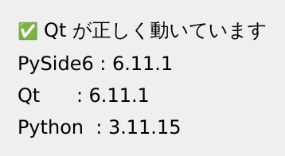

第 1 章·読了目安 8 分
第1章 環境構築 — 3 分で始める
Python さえ入っていれば、Qt の準備は pip コマンド 1 行で終わります。つまずきやすい仮想環境の話も含めて確実に通します。
Qt というと「インストーラを落として数 GB のダウンロードを待つ」印象があるかもしれません。
PySide6 の場合は違います。必要なものはすべて 1 つのパッケージに入っていて、
pip install の 1 行で終わります。
必要なもの
| 要るもの | 条件 |
|---|---|
| Python | 3.10 以上 3.14 以下（3.12 前後が無難） |
| OS | Windows / macOS / Linux のどれでも |
| エディタ | VS Code など、好きなもので |
C++ のコンパイラも、Qt 本体のインストーラも要りません。 Qt のライブラリ本体は PySide6 のパッケージに同梱されています。
Python が入っているか確かめる
ターミナル（Windows なら PowerShell やコマンドプロンプト）で確認します。
python --version
Python 3.11.x のように出れば大丈夫です。
macOS や Linux では python3 と打つ必要があるかもしれません。
「見つかりません」と言われたら、先に python.org から入れてください。
PySide6 6.11 が対応しているのは Python 3.10 以上 3.14 以下です。
範囲外の Python で pip install pyside6 を実行すると、
次のようなメッセージが出てインストールが失敗します。
ERROR: Could not find a version that satisfies the requirement pyside6ERROR: No matching distribution found for pyside6
「パッケージ名を間違えたのかな」と思いがちですが、
Python のバージョンが合っていないだけです。
まず python --version を確認してください。
出たばかりの最新の Python でも、まだ対応していないことがあります。
作業用のフォルダと仮想環境を作る
いきなり pip install しても動きますが、
仮想環境を作っておくと、プロジェクトごとにパッケージを独立させられます。
後で「別のプロジェクトのために入れたものが干渉した」という事故を防げます。
mkdir qt-practicecd qt-practicepython3 -m venv .venvsource .venv/bin/activatemkdir qt-practicecd qt-practicepython -m venv .venv.venv\Scripts\Activate.ps1
うまくいくと、プロンプトの先頭に (.venv) と出ます。これが「仮想環境の中にいる」印です。
PowerShell の既定の設定で止められています。 PowerShell で次を 1 回だけ実行すると通るようになります。
Set-ExecutionPolicy -Scope CurrentUser RemoteSignedPySide6 を入れる
pip install pyside6これだけです。100 MB ほどのダウンロードがあるので、少し待ちます。 Qt のライブラリ本体も、この後で使う Qt Designer も、全部これに含まれています。
この教材とまったく同じ環境にしたい場合は、バージョンを明示して入れます。
pip install pyside6==6.11.1ちゃんと入ったか、画面を出して確かめる
import が通るだけでは不十分です。実際にウィンドウが出るところまで確認しましょう。
次のファイルを ch01_verify.py という名前で保存して実行してください。
"""環境が正しく整ったかを確認する。この教材と同じバージョンで動いているかを、実際にウィンドウを出して確かめる。実行: python ch01_verify.py"""import sysfrom PySide6 import __version__ as pyside_versionfrom PySide6.QtCore import qVersionfrom PySide6.QtWidgets import QApplication, QLabel, QVBoxLayout, QWidgetapp = QApplication(sys.argv)window = QWidget()window.setWindowTitle("環境チェック")layout = QVBoxLayout(window)layout.addWidget(QLabel("✅ Qt が正しく動いています"))layout.addWidget(QLabel(f"PySide6 : {pyside_version}"))layout.addWidget(QLabel(f"Qt : {qVersion()}"))layout.addWidget(QLabel(f"Python : {sys.version.split()[0]}"))window.show()sys.exit(app.exec())python ch01_verify.py
このウィンドウが出れば環境構築は完了です。ウィンドウを閉じればプログラムも終わります。
Qt が画面を描くために必要な OS 側のライブラリが足りていません。 Ubuntu / Debian 系なら次で入ります。
sudo apt install -y libegl1 libxkbcommon-x11-0 libxcb-cursor0 \ libxcb-icccm4 libxcb-image0 libxcb-keysyms1 libxcb-randr0 \ libxcb-render-util0 libxcb-shape0 libxcb-xinerama0Windows と macOS ではこの問題は起きません。
ついてくる道具たち
pip install pyside6 をすると、コマンドもいくつか使えるようになります。
この教材で登場するのは上の 2 つです。
| コマンド | 何をするか | 登場する章 |
|---|---|---|
pyside6-designer | 画面をマウスで作るツールを起動する | 第 9 章 |
pyside6-uic | Designer で作った .ui を Python に変換する | 第 9 章 |
pyside6-rcc | 画像などをプログラムに埋め込む形式に変換する | — |
pyside6-lupdate | 翻訳用の文言を抜き出す | — |
ch01_verify.py の QLabel の文字を好きなものに書き換えて、
もう一度実行してみてください。保存して python ch01_verify.py を打ち直すだけです。
「直す → 実行する」の往復が、これから何百回も繰り返す基本動作になります。
この章のまとめ
- 準備は
pip install pyside6の 1 行。Qt 本体も Designer も同梱されている。 - 仮想環境（
python -m venv .venv）を作っておくと、後々の事故を防げる。 - 確認は
importだけで済ませず、実際にウィンドウを出すところまでやる。 - Linux で
xcbのエラーが出たら、OS 側のライブラリを追加で入れる。